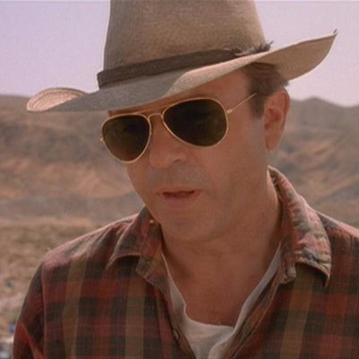
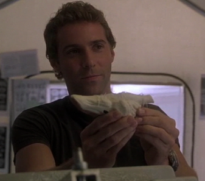
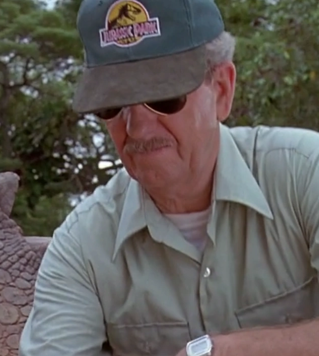
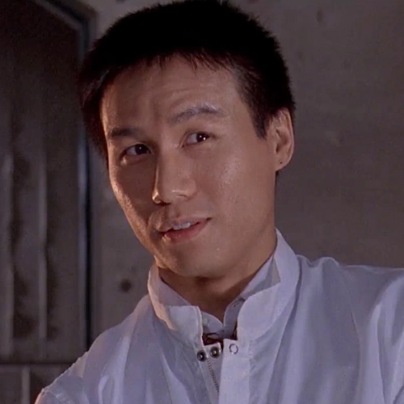
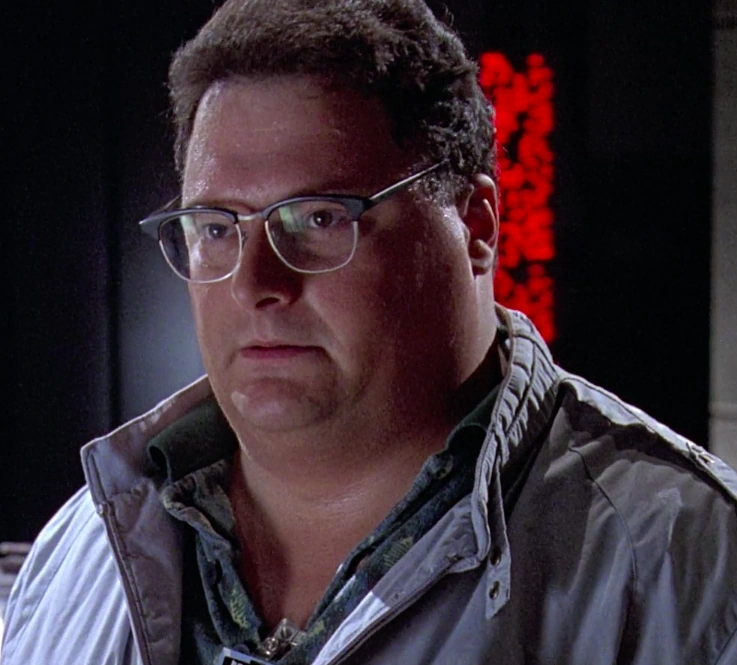
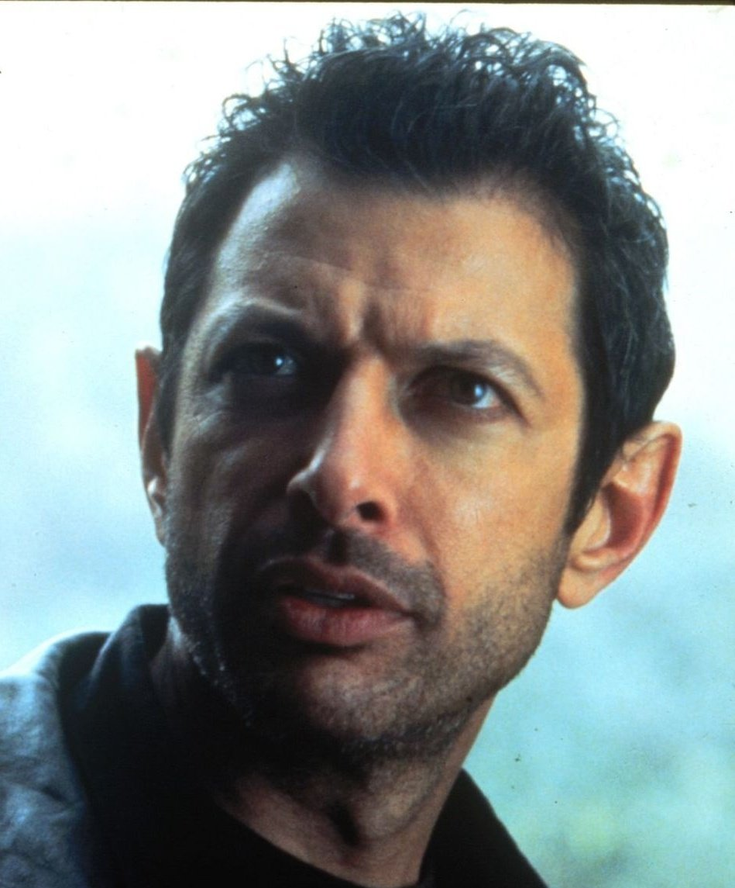
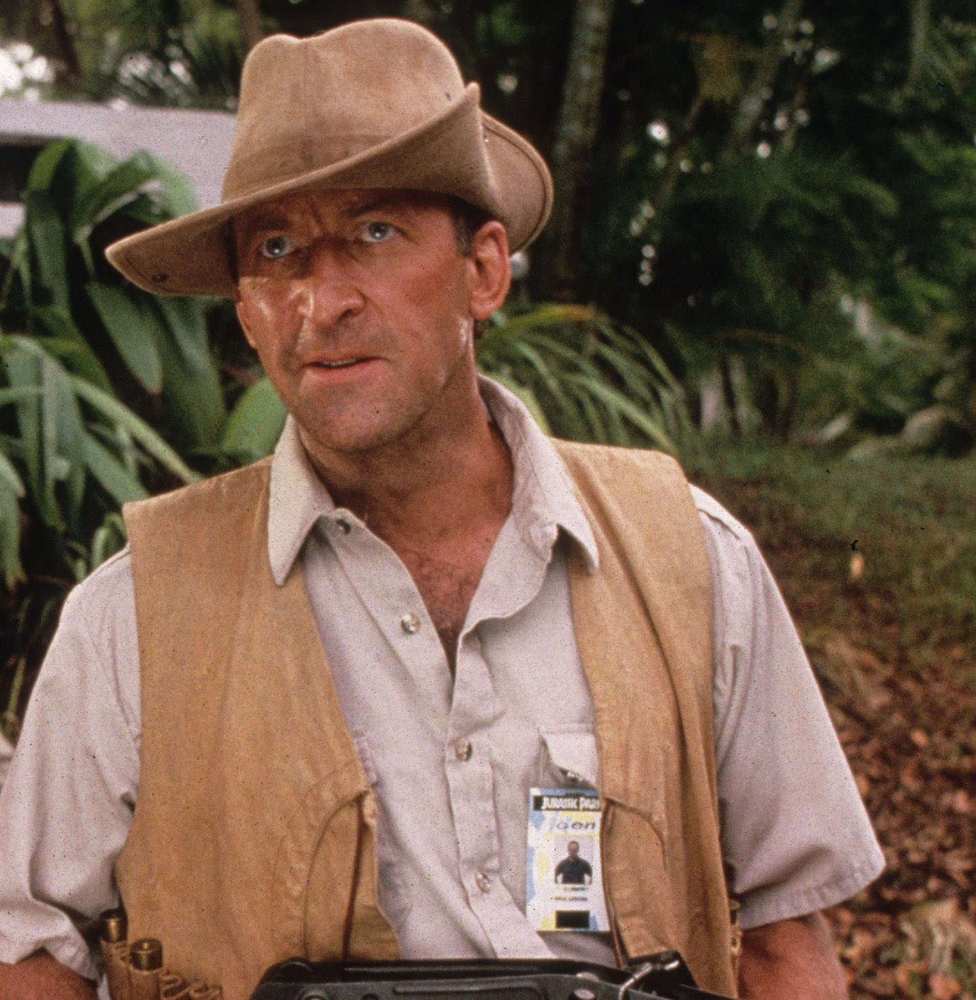
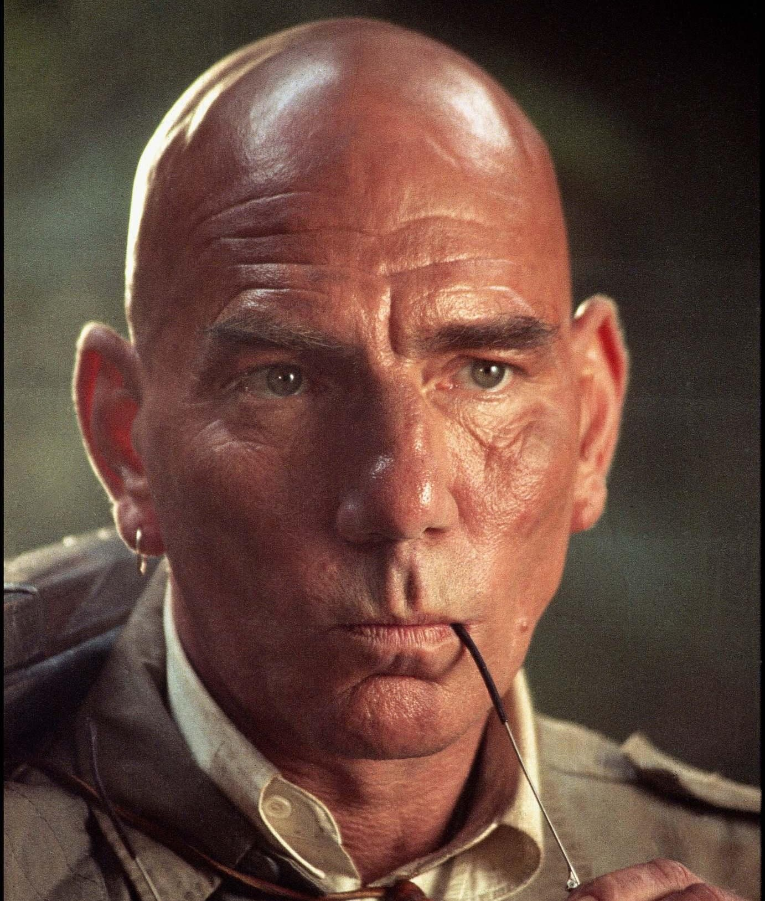

En Jurassic Park, la excelencia y la experiencia son los pilares fundamentales en la selección del personal. Con el objetivo de crear un entorno seguro y educativo, InGen ha reclutado a los mejores profesionales de diversas disciplinas, asegurando que cada aspecto de los parques esté gestionado por expertos de renombre mundial.
Científicos y expertos en genética: La base de Jurassic Park se encuentra en la ingeniería genética avanzada. Para garantizar el éxito en la clonación y cuidado de los dinosaurios, InGen ha contratado a los genetistas más brillantes. Estos profesionales son pioneros en su campo,responsables de la creación y mantenimiento de las especies clonadas, asegurando su salud y bienestar.
Paleontólogos y paleobotánicos: Para recrear fielmente el mundo prehistórico, el parque cuenta con la colaboración de destacados paleontólogos. Su profundo conocimiento de los dinosaurios y su entorno natural permite a InGen diseñar hábitats auténticos y sostenibles, proporcionando una experiencia educativa única para los visitantes.
Zoología y comportamiento animal: Comprender el comportamiento de los dinosaurios es crucial para mantener su bienestar y la seguridad del parque. Nuestros profesionales aportan su vasta experiencia en zoología, estudiando y gestionando el comportamiento de los dinosaurios para garantizar su adaptación y tranquilidad en el entorno controlado del parque.
Veterinaria y cuidado animal: La salud de los dinosaurios es una prioridad máxima. El equipo veterinario de Jurassic Park está equipado para manejar cualquier emergencia médica, ofreciendo cuidado continuo y especializado a todas las especies del parque.
Seguridad y manejo de riesgos: La seguridad de los visitantes y del personal es fundamental. Expertos en seguridad han sido seleccionados por su experiencia en manejo de animales peligrosos y estrategias de seguridad. Junto a ingenieros, garantizan que todas las instalaciones funcionen correctamente y que se implementen medidas de seguridad efectivas en todo momento.
Tecnología y sistemas informáticos: El funcionamiento eficiente de Jurassic Park depende de una infraestructura tecnológica robusta. Profesionales en informática han sido seleccionados por su habilidad para desarrollar y mantener los sistemas que controlan el parque, asegurando una operación sin interrupciones.
Matemáticas y teoría del caos: Para anticipar y mitigar posibles riesgos, InGen ha incorporado a expertos en teoría del caos. Las perspectivas y análisis matemáticos ayudan a prever escenarios imprevistos y a implementar soluciones preventivas.
Jurassic Park se enorgullece de contar con un equipo de élite, cuidadosamente seleccionado por su experiencia y habilidades excepcionales. Cada miembro del equipo juega un papel crucial en la operación del parque, asegurando una experiencia segura, educativa y fascinante para todos los visitantes, al tiempo que se cuida y preserva la majestuosa vida de los dinosaurios. Les presentmos a nuestros mejores elementos en cada área.
Área: Paleontología.
Descripción: Dr. Alan Grant es un renombrado paleontólogo conocido por su extensa investigación sobre dinosaurios y fósiles. En InGen, aporta su experiencia en la autenticidad de las criaturas clonadas.
Área: Paleobotánica.
Descripción: Dra. Ellie Sattler es una experta en la vegetación del período Cretácico y asesora a InGen sobre el entorno natural adecuado para los dinosaurios clonados.
Área: Zoología.
Descripción: Dra. Sarah Harding es una zoóloga experta en comportamiento animal. En InGen, se enfoca en estudiar y manejar el comportamiento de los dinosaurios.
Área: Paleontología Asistente.
Descripción: Billy Brennan es asistente del Dr. Alan Grant, especialista en tecnología de excavación y modelado en 3D de fósiles. Contribuye a InGen en la investigación y recreación de dinosaurios.
Área: Veterinaria.
Descripción: Dr. Gerry Harding es el veterinario jefe de Jurassic Park, responsable del cuidado médico y bienestar de todos los dinosaurios del parque.
Área: Genética.
Descripción: Dr. Henry Wu es el genetista principal de InGen, encargado de la clonación y creación de los dinosaurios. Su trabajo es fundamental para el éxito de Jurassic Park.
Área: Genética.
Descripción: Dra. Laura Sorkin es una genetista que trabaja junto a Henry Wu en la investigación y desarrollo de nuevas técnicas de clonación para mejorar la diversidad genética de los dinosaurios de Jurassic Park.
Área: Informática.
Descripción: Dennis Nedry es el ingeniero de sistemas responsable de la infraestructura informática de Jurassic Park. Su trabajo garantiza que todos los sistemas operen sin problemas.
Área: Ingeniería.
Descripción: John Arnold es el ingeniero jefe encargado de los sistemas eléctricos y de informática en Jurassic Park, asegurando que el parque funcione de manera eficiente y segura.
Área: Matemáticas y Teoría del Caos.
Descripción: Dr. Ian Malcolm es un matemático especializado en teoría del caos. Su perspectiva crítica y sus análisis matemáticos ayudan a prever y mitigar riesgos en las operaciones de InGen.
Área: Seguridad.
Descripción: Robert Muldoon es el jefe de seguridad de Jurassic Park, experto en el manejo de animales peligrosos y encargado de la protección del parque y sus visitantes.
Área: Caza y Seguridad.
Descripción: Roland Tembo es un cazador experto contratado por InGen para manejar situaciones de emergencia y contener a los dinosaurios más peligrosos.
